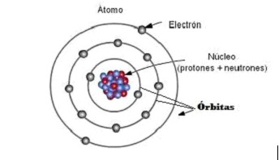
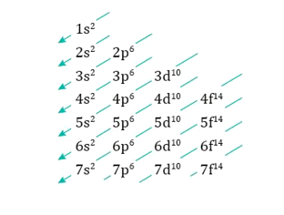
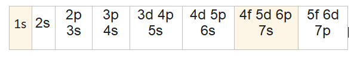
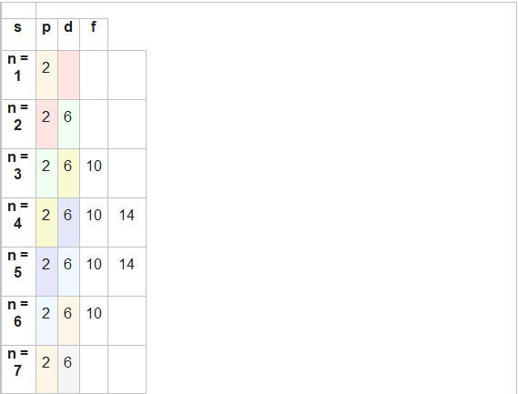
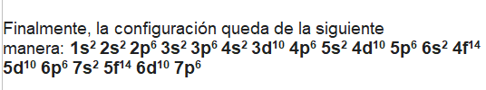

QUIMICA
Trabajo para contenido de página web
EDUAR ADRIAN ALVAREZ DIAZ
deyvis becerra
8*6
INSTITUCION EDUCATIVA DIEGO ECHAVARRIA MISAS DE MEDELLIN
PERIODO 2
MEDELLIN
2024
SOLUCION
DISTRIBUCION ELECTRONICA
Es la distribución de los electrones de un átomo en los diferentes estados energéticos determinados por los orbitales en dicho átomo. Así, mediante la configuración electrónica se representan los diferentes estados de los electrones presentes en el átomo.

La distribución de los electrones se denomina en los subniveles y orbitales de un átomo.
La configuración electrónica de los elementos se rige según el diagrama de HYPERLINK "https://es.wikipedia.org/wiki/Diagrama_de_Moeller"Moeller

Para encontrar la distribución electrónica, se escriben las notaciones en forma diagonal desde arriba hacia abajo y de derecha a izquierda:

Es posible describir la estructura electrónica de los átomos estableciendo el subnivel o distribución orbital de sus electrones. Un subnivel s se puede llenar con 1 o 2 electrones. Un subnivel p puede contener de 1 a 6 electrones; un subnivel d, de 1 a 10 electrones y un subnivel f, de 1 a 14 electrones.
Los electrones se colocan primero en los subniveles de menor energía y cuando estos están completamente ocupados, se usa el siguiente subnivel con energía superior.

